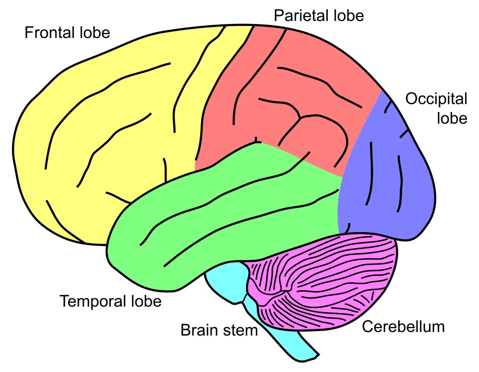

El «pequeño cerebro»
El cerebelo está en la parte posterior e inferior del cráneo, detrás del tronco del encéfalo. Pesa unos 150 gramos, apenas el 10 % del encéfalo, pero contiene más de la mitad de todas las neuronas del cerebro: unos 69.000 millones, sobre todo las diminutas células granulosas. Su superficie está plegada en láminas finas (folias), y al cortarlo se ve un dibujo en forma de árbol, el árbol de la vida.
Partes
- Vermis: la parte central, que controla el equilibrio y la postura del tronco.
- Hemisferios cerebelosos: controlan la coordinación de las extremidades del mismo lado del cuerpo.
- Lóbulo floculonodular: conectado con el oído interno, controla el equilibrio y los movimientos de los ojos.
- Tres pedúnculos lo unen al tronco del encéfalo.
En su corteza destacan las células de Purkinje, unas de las neuronas más grandes del cerebro, con un enorme árbol de dendritas que recibe hasta 200.000 conexiones. Son la única salida de la corteza cerebelosa.
Qué hace
Coordinación del movimiento
El cerebelo no inicia los movimientos, pero los hace precisos, suaves y coordinados. Compara lo que el cerebro ordena con lo que realmente sucede (gracias a la información de músculos y articulaciones) y corrige los errores en tiempo real. Es como un piloto automático que ajusta la dirección, la fuerza y el momento de cada movimiento.
Equilibrio y postura
Junto con el oído interno y la vista, mantiene el equilibrio al estar de pie y al caminar.
Aprendizaje motor
Aprender a montar en bicicleta, escribir a máquina o tocar un instrumento depende en gran parte del cerebelo, que va automatizando los movimientos con la práctica.
Funciones cognitivas y emocionales
Durante mucho tiempo se pensó que solo servía para el movimiento. Hoy se sabe que participa también en la atención, el lenguaje, la planificación y la regulación de las emociones. Las lesiones del cerebelo pueden producir el síndrome cognitivo-afectivo cerebeloso, descrito por Jeremy Schmahmann en 1998.
Cuando falla: la ataxia
La lesión del cerebelo produce ataxia, una falta de coordinación:
| Signo | Qué se observa |
|---|---|
| Marcha atáxica | Inestable, con las piernas separadas, como un borracho |
| Dismetría | Al tocarse la nariz, el dedo se pasa o se queda corto |
| Temblor intencional | Aparece y aumenta al acercarse al objetivo |
| Disdiadococinesia | Torpeza en movimientos alternos rápidos (girar la mano) |
| Disartria | Habla lenta, «escandida», separando las sílabas |
| Nistagmo | Movimientos rítmicos e involuntarios de los ojos |
| Hipotonía | Músculos flojos |
Una lesión de un hemisferio cerebeloso afecta al mismo lado del cuerpo, al revés que en la corteza cerebral. Estos signos se buscan en la exploración neurológica.
Causas de lesión del cerebelo
- Alcohol: la causa más frecuente de daño crónico; afecta sobre todo al vermis. Ver alcohol, tabaco y drogas.
- Ictus e hemorragias cerebelosos: pueden dar solo vértigo e inestabilidad, y confundirse con un problema del oído. Son peligrosos porque, al hincharse, comprimen el tronco.
- Esclerosis múltiple.
- Ataxias hereditarias (Friedreich, espinocerebelosas) y la atrofia multisistémica, uno de los parkinsonismos atípicos.
- Tumores, sobre todo en niños (meduloblastoma, astrocitoma); malformación de Chiari.
- Fármacos (algunos antiepilépticos en dosis altas), déficit de vitamina E o B1, celiaquía, causas autoinmunes y paraneoplásicas.
Fuentes
- Schmahmann JD, Sherman JC. The cerebellar cognitive affective syndrome. Brain. 1998;121:561-79.
- Herculano-Houzel S. The human brain in numbers: a linearly scaled-up primate brain. Front Hum Neurosci. 2009;3:31.
- Manto M, et al. Consensus paper: roles of the cerebellum in motor control. Cerebellum. 2012;11:457-87.